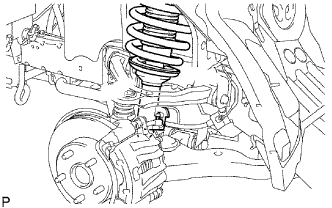
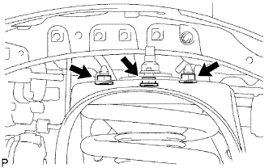
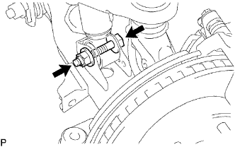
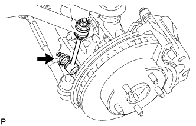

BỘ GIẢM CHẤN TRƯỚC VỚI LÒ XO TRỤ > LẮP |
| 1. LẮP TẠM THỜI CỤM GIẢM CHẤN TRƯỚC VỚI LÒ XO TRỤ |
|  |
Lắp bộ giảm chấn vào thân xe sao cho: 1) đầu dưới của lò xo trụ bên trái hướng ra bên ngoài xe, và 2) đầu dưới của lò xo trụ bên phải hướng ra phía trước xe.
|  |
Lắp 3 đai ốc lên phía trên của bộ giảm chấn với lò xo trụ.
|  |
Lắp tạm thời bu lông và đai ốc như chỉ ra trong hình vẽ.
| 2. LẮP THANH ỔN ĐỊNH PHÍA TRƯỚC |
Lắp thanh ổn định (Xem trang Kích chuột vào đây).
| 3. LẮP CỤM THANH NỐI THANH ỔN ĐỊNH TRƯỚC TRÁI |
|  |
Lắp thanh nối thanh ổn định vào đòn treo dưới bằng đai ốc.
| 4. LẮP CỤM THANH NỐI THANH ỔN ĐỊNH TRƯỚC PHẢI |
| 5. LẮP BÁNH TRƯỚC |
| 6. ỔN ĐỊNH HỆ THỐNG TREO |
Hạ thấp xe.
Hãy nhún xe vài lần để ổn định hệ thống treo.
| 7. XIẾT CHẶT BỘ GIẢM CHẤN TRƯƠC CÓ LÒ XO TRỤ |
Cố định đai ốc và xiết chặt bu lông.
| 8. KIỂM TRA VÀ ĐIỀU CHỈNH GÓC ĐẶT BÁNH TRƯỚC |
Kiểm tra và điều chỉnh góc đặt bánh trước (Xem trang Kích chuột vào đây).